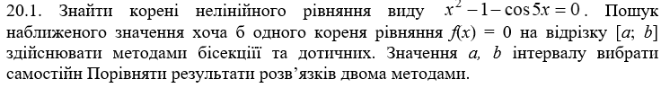
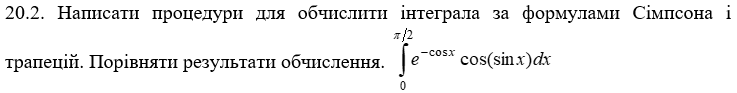
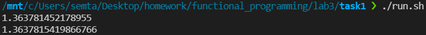
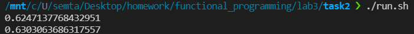
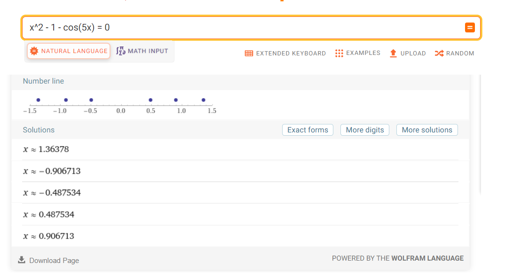
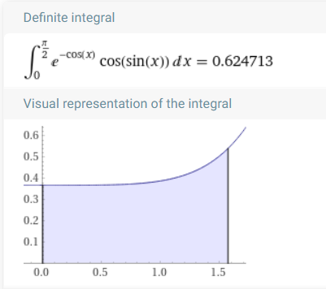

Лабораторна робота 3.
Чисельне інтегрування функцій одної змінної.
Варіант 20
Автор
| ПІБ: | Семечненко Тарас Олександрович |
| Курс: | 4 |
| Група: | ІПЗ-42 |
| Рік навчання: | 2021-2022 |
Зміст
Мета
Умова задачі
Структура програми
Обгрунтування вибору середовища та мови програмування
Код програми
Скрін-шоти
Аналіз достовірності результатів
Висновки
Мета
Розв’язати нелінійні рівняння та здійснити чисельне інтегрування функцій наближеними методами, використовуючи мови функціонального програмування та lambda, let та set! форми.
Умова задачі
Задача 1
Задача 2
Структура програми
Схема задачі 1

Схема задачі 2

Обгрунтування вибору середовища та мови програмування
Середовище програмування: VS Code
Середовище обране через:1) Це моє основне середовище в якому програмую, і його можна використовувати майже для будь-якої мови програмування.
2) Має всі необхідні функції для програмування і працює набагато швидше в порівнянні з іншими IDE.
Мова функціонального програмування: Haskell
Мова обрана через:1) Це одна з самих популярних та нових функціональних мов програмування.
2) Дуже багата документація.
3) Мова має дуже приємний та простий синтаксис.
Код програми:
Завдання 1:
Завдання 2:
Посилання на код 1 завдання
Посилання на код 2 завдання
Скрін-шоти:
Результат виконання 1 програми:
Результат виконання 2 програми:
Аналіз достовірності результатів
Результати знаходження коренів лінійного рівняння співпадають з розрахунками на онлайн калькуляторі Wolfram, де можна побачити, що алгоритм знайшов одне з можливих рішень:
Результати виконання другої програми співпадають з моїми розрахунками на онлайн калькуляторі Wolfram.
Висновки
В л.р. було виконано 2 завдання за допомогою мови Haskell.
В першому завданні були реалізовані 2 методи пошуку коренів рівняння: метод бісекцій та метод дотичних. Результати виконання цих методів співпадають з відповідями в онлайн калькуляторів, однак відповіді цих методів при однакових заданих вхідних даних можуть відрізнятися, оскільки вони можуть знайти різні корені рівняння.
В другому завдання були реалізовані 2 методи обчислення інтегралів: Сімпсона і трапецій. Результати цих алгоритмів також співпадають з розрахунками на онлайн калькуляторі, однак метод трапецій значено точніше в порівнянні з методом Симпсона.